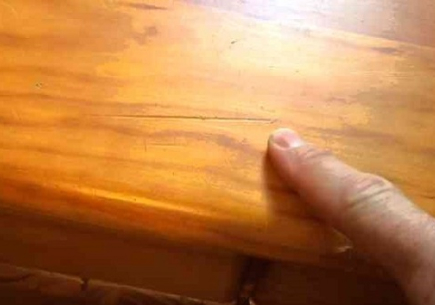
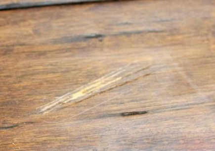
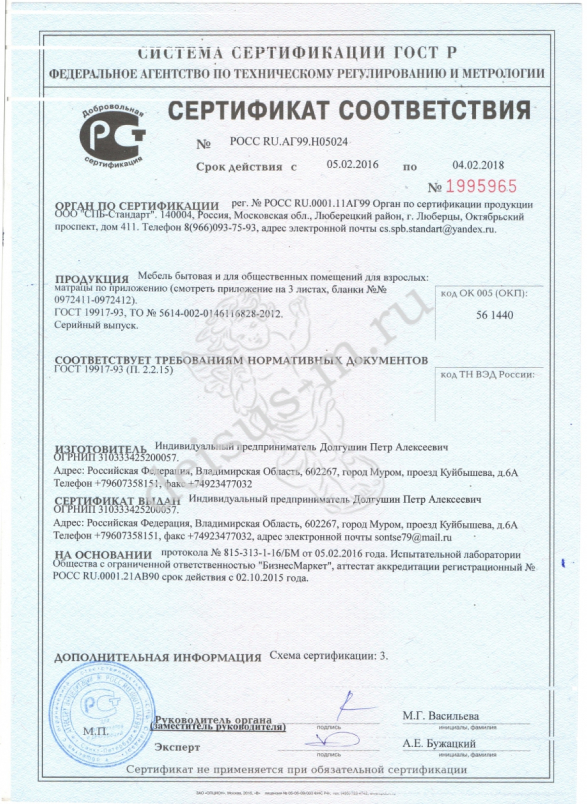

<% var data = { title: "Покупайте подлинную мебель фабрики «Дейсус-М»", }; %>
<%=_.template(require('./../includes/header.html').default)(data) %>
<div class="container">
  <div class="main-content-wrapper">
    <main class="main-content">
      <%= _.template(require('./../includes/breadcrumbs.html').default)() %>
      <h1 class="page__title">Покупайте подлинную мебель фабрики «Дейсус-М»</h1>
      <div class="page-article">
        <div class="article-block article-block--has-content-right">
          <div class="article-block__text">
            <p> Красивая деревянная мебель обладает особым статусом и стоит вне конкуренции. Она популярна и на
              сегодняшний момент, спрос на такую продукцию с годами только возрастает.</p>
            <p>Мебель известных производителей активно подделывают. Современный рынок пестрит многочисленными
              предложениями, среди которых есть немало фальсифицированной продукции.</p>
            <p>Чтобы не стать жертвой обмана, заказывайте подлинную мебель на официальном сайте фабрики "Дейсус-М",
              отмеченную фирменным знаком. </p>
          </div>

          <div class="article-block__content article-block__content--right">
            <figure class="article-block__image">
              
              <figcaption class="article-block__image-name">Фирменный знак «Дейсус-М»</figcaption>
            </figure>
          </div>


          <div class="article-block__title">Отличие оригинальной мебели от поддельной</div>

          <p>
            Вероятность приобретения «одноразовых» изделий на рынке очень велика, к тому же «пиратские» образцы стоят
            намного дешевле, но служат недолго. Чтобы избежать ненужных потерь и исключить малейшие риски, следует
            приобретать товар непосредственно у производителя.
          </p>
          <p> В признакам контрафактной продукции относятся:</p>
          <ul>
            <li>расценки на оригинальную фирменную продукцию несколько выше той цены, по которой аналогичные модели
              продаются в иных местах. При тщательном осмотре копий можно обнаружить различные дефекты, указывающие на
              низкое качество изделий;
            </li>
            <li> логотип будет отличаться от фирменного знака либо вовсе отсутствовать В первом случае при детальном
              рассмотрении изъян обнаружится в его изображении или в буквенном написании;
            </li>
          </ul>


          <div class="article-block__images article-block__images--2-items">
            
            
          </div>

          <ul>
            <li>ненадежная фурнитура, а также ее несоответствие комплектности;</li>
            <li>непрезентабельная упаковка (зачастую с повреждениями) или ее отсутствие;</li>
            <li>о подделке свидетельствует отсутствие сертификата качества на продукцию, договора на поставку товара
              производителем и инструкции по сборке.</li>
          </ul>

          <div class="article-block__content article-block__content--right">
            <div class="article-block-slider">
              <div class="swiper-container article-block-slider__container">
                <div class="swiper-wrapper article-block-slider__wrapper">

                  <div class="swiper-slide article-block-slider__slide slide-article-block-slider">
                    <figure class="slide-article-block-slider__image">
                      
                      <figcaption class="slide-article-block-slider__image-name">
                        Ознакомьтесь с этими и другими документами на странице «Сертификаты»
                      </figcaption>
                    </figure>
                  </div>

                  <div class="swiper-slide article-block-slider__slide slide-article-block-slider">
                    <figure class="slide-article-block-slider__image">
                      
                      <figcaption class="slide-article-block-slider__image-name">
                        Ознакомьтесь с этими и другими документами на странице «Сертификаты»
                      </figcaption>
                    </figure>
                  </div>

                  <div class="swiper-slide article-block-slider__slide slide-article-block-slider">
                    <figure class="slide-article-block-slider__image">
                      
                      <figcaption class="slide-article-block-slider__image-name">
                        Ознакомьтесь с этими и другими документами на странице «Сертификаты»
                      </figcaption>
                    </figure>
                  </div>

                </div>
              </div>
            </div>
          </div>


          <p>
            На мебель от "Дейсус-М" нанесен фирменный знак, позволяющий убедиться в ее подлинности. Преимущества
            приобретения товаров непосредственно с фабрики очевидны каждому. В их числе:
          </p>
          <ul>
            <li>разнообразный выбор моделей, подходящих под любую планировку помещений;</li>
            <li>непревзойдённая долговечность оригинальной мебели, обусловленная использованием качественной древесины,
              надежной фурнитуры и сертифицированных покрытий;</li>
            <li>высокая прочность, экологическая чистота и безопасность;</li>
            <li>доступность скидок и специальных предложений;</li>
            <li>предоставление гарантии производителя;</li>
            <li>возможность обмена или возврата;</li>
            <li>оперативная доставка.</li>
          </ul>


          <div class="article-block__title">

            Особенности натуральной фабричной мебели
          </div>
          <p>Продукция фабрики "Дейсус-М" – это результат кропотливого и длительного производственного процесса, в
            который вложено масса инвестиций, творческих идей и инновационных технологических решений.</p>
          <p>Ассортимент представлен современными и классическими изделиями, разработанными опытными мастерами,
            талантливыми дизайнерами и конструкторами с применением компьютерных программ, передовых технологий и
            высококачественного натурального сырья. </p>
          <p>Долговечные, практичные, роскошные модели гармонично сочетают в себе высокие эксплуатационные
            характеристики, элегантность и оптимальную стоимость. Стильные модели мебели великолепно выглядят и со
            временем становятся только краше. Появляющаяся с годами патина лишь усиливает привлекательность предметов.
          </p>
          <p>Почитатели истинных ценностей и просто практичные люди никогда не променяют оригинал на копию, так как
            это приобретение делается на долгие годы. Фирменные образцы сочетают в себе эстетику, стиль, качество и
            служат разумным вложением средств. </p>
          <p>Изучайте фирменный каталог и выбирайте понравившиеся экземпляры в любой комплектации. Постоянным клиентам
            и оптовикам предоставляем выгодные условия сотрудничества. Покупателям доступны широкий выбор
            логистических услуг и оперативная транспортировка груза по наиболее выгодному маршруту.</p>
          <p>При возникновении вопросов воспользуйтесь бесплатной консультаций и уточните у менеджеров технические и
            организационные моменты.</p>
          <p>Окружите себя настоящей фабричной мебелью, которая наполнит вам дом теплой и уютной атмосферой!</p>

        </div>
      </div>
    </main>
  </div>
</div>

<%= _.template(require('./../includes/footer.html').default)(data) %>